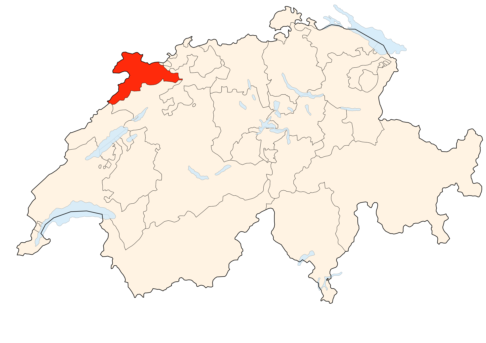

Mein Lieblingsfest
Sébastien Barbier - September 2022
Frankreich
Weine
Vin Jaune
Franche-Comté

Jura
Jura
Kanton Jura
Vin Jaune
"Der Vin Jaune (französisch für ‚gelber Wein‘) ist eine Weinspezialität des Weinanbaugebiets Jura, welcher in einer typischen Flasche abgegeben wird. [...]
"Dieser Wein wird ausschließlich aus der weißen Rebsorte Savagnin hergestellt."
"Vin Jaune ist ein oxidativer Wein."
"Nach der Vergärung des Mosts muss der Wein noch mindestens sechs Jahre und drei Monate in einem Barriquefass lagern. In dieser Reifezeit verdunsten bis zu 40 % des Weines."
"Die lange Reifezeit erklärt auch den hohen Preis des Weines, der üblicherweise bei etwa 30 Euro pro Flasche liegt."
"Nach dem Abfüllen hält sich der Wein sehr lange. Lagerzeiten von 40 bis 50 Jahren sind keine Seltenheit."
Weinfest
Seit 1997 findet jeweils am ersten Februarwochenende das Weinfest Percée du Vin Jaune statt. Der Veranstaltungsort wechselt von Jahr zu Jahr.
"die Zeremonie"


"die Clavelinage"


"Auktionen"


"Die Verkostung"


In der Schweiz
Achtung !
Der Missbrauch von Alkohol kann gesundheitsschädigend sein.